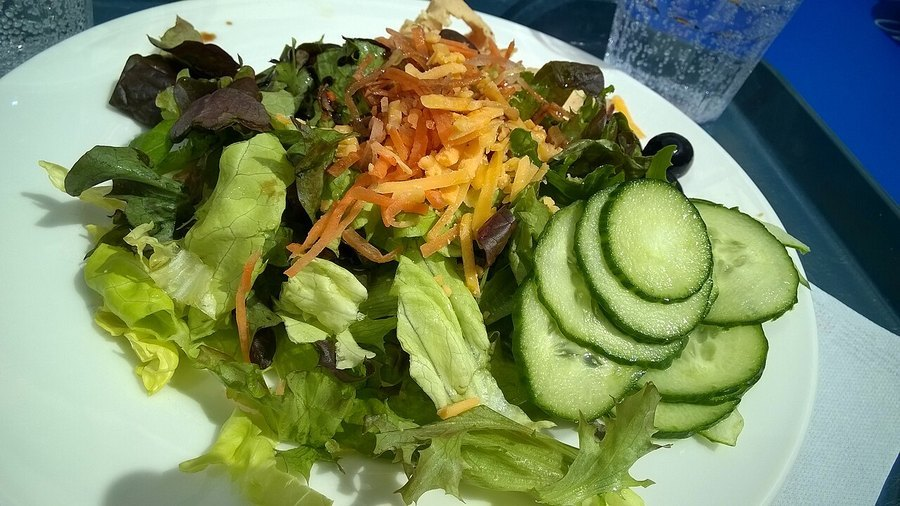

Cooking and Brain Health: Why Meal Prep Doubles as Mental Exercise
Chopping, timing and tasting at the same time is harder than it looks. Here's what the research actually says about cooking as a workout for the brain, not just a way to get dinner on the table.

Photo: milo-photo from Dublin, Ireland / Wikimedia Commons / CC BY 2.0
Key takeaways
- Cooking a meal from scratch is a genuine multitasking exercise: planning steps, tracking timing and adjusting as you go.
- Population studies link independent meal preparation in older adults with better cognitive outcomes over time, though this is correlation, not proof of cause.
- Novel recipes are more mentally demanding than the same five dinners on repeat, since unfamiliar steps require more active attention.
- The food itself still matters separately from the mental workout of preparing it.
- Cooking with others adds a social layer on top of the cognitive one, and social connection has its own ties to brain health.
- This is a helpful daily habit, not a treatment for memory loss or any diagnosed condition.
Short answer: yes, cooking functions as a kind of hidden brain exercise. Preparing a meal from scratch asks you to sequence steps, hold multiple timings in working memory, adjust for substitutions, and coordinate your hands the whole time. Researchers who study everyday cognitive engagement count this as meaningful mental activity, even though most people experience it as a chore rather than a workout.
What makes cooking cognitively demanding in the first place?
A simple weeknight dinner is really several tasks running at once. You're reading or recalling a sequence, measuring and timing multiple components so they finish together, and reacting to small surprises: the onions are browning faster than expected, you're out of an ingredient and need a substitute. This kind of planning, tracked over a stretch of twenty or thirty minutes, draws on working memory and executive function, the same mental skills exercised by a puzzle or a strategy game. The difference is that nobody thinks of chopping vegetables as brain training, so it gets dismissed as "just dinner."
Is there real research linking cooking to brain health?
Some population studies have tracked older adults over years and found that those who continue to prepare their own meals, rather than relying entirely on others or on pre-made food, tend to show better cognitive outcomes later on. That's a genuinely interesting pattern, but it comes with a familiar caveat in this kind of research: people who keep cooking for themselves also tend to be more mobile, more socially engaged and eating a better diet overall, any of which could explain part of the link. No study has isolated "chopping vegetables" as the one variable responsible for the difference. What's fair to say is that cooking sits inside a cluster of habits, independence, routine, and self-care, that research consistently associates with healthier aging.
COMPLEX
The memory formula we rate highest in 2026
A kitchen habit is a great start. Advanced Memory Complex pairs citicoline, bacopa and phosphatidylserine with core B-vitamins for the nutrient side, backed by a fully transparent, clinically-dosed label and a 60-day guarantee.
See Today's Price →Does what you cook matter as much as the act of cooking?
Both halves count, and they're genuinely separate. The mental workout from planning and multitasking is independent of what ends up on the plate. A pattern of eating built around vegetables, fish, legumes and whole grains carries its own, better-studied evidence for long-term brain health, covered in more depth in our guide to the Mediterranean diet and memory. Cooking that way at home gets you both benefits at once: the cognitive engagement of preparing the meal and the nutritional upside of actually eating well, rather than defaulting to convenience food that's quick but offers less of either.
If you're looking for specific ingredients worth building meals around, our roundup of the best brain foods is a reasonable starting list for a weekly rotation.
How can you make cooking more mentally engaging, not just routine?
Novelty is the key lever. Making the same five dinners on rotation becomes close to automatic after a while, which is convenient but less demanding on the brain than it once was. Trying an unfamiliar recipe, especially one with a few more steps or an ingredient you haven't used before, forces more active attention and planning. Cooking alongside a partner, friend or grandchild adds a social dimension on top of the cognitive one, and that combination, mental engagement plus connection, is a stronger pattern in the research than either alone. Even something as small as cooking from memory once in a while instead of following a recipe on your phone adds a bit of genuine recall practice.
Frequently asked questions
Does cooking actually count as a brain exercise?
Cooking a meal from scratch involves planning steps in order, holding several timings in working memory at once, and adjusting on the fly, which researchers consider a form of real-world cognitive engagement. It's not a substitute for proven habits like exercise and sleep, but it is a genuinely demanding mental task dressed up as a chore.
Is cooking linked to lower dementia risk in studies?
Some population studies have found that older adults who regularly prepare their own meals and maintain complex daily routines show better cognitive outcomes over time, but this kind of research cannot prove cooking itself causes the difference, since people who cook often also eat better and stay more socially active.
Does the food you cook matter as much as the act of cooking?
Yes. The mental workout from chopping, timing and multitasking is a separate benefit from what ends up on the plate. A diet built around vegetables, fish and whole foods has its own, better-established evidence for brain health, so cooking helps most when both halves are in place.
How can I make cooking more mentally engaging?
Try new recipes instead of the same five meals on rotation, since novelty is what makes any activity more cognitively demanding. Cooking with a friend or family member adds a social component, and skipping the recipe app occasionally to work from memory adds a small recall challenge of its own.
Want to support your brain beyond the kitchen?
A hands-on cooking habit is a great start. See the memory formulas our editors rate highest for 2026 for the nutrient side of the equation.
See the Top 5 Memory Formulas →Related: Mediterranean diet and memory · Best brain foods · How to improve your memory · Best memory formulas of 2026